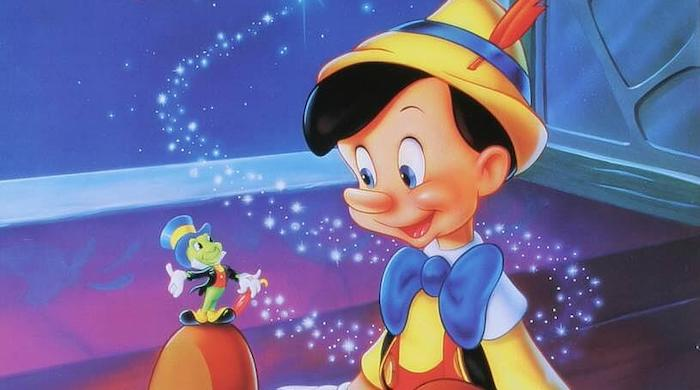

Pinocchio

A living wood puppet, with the help of a cricket as his conscience, must prove himself a real boy.
Storyline
Inventor Gepetto creates a wooden marionette called Pinocchio. His wish for Pinocchio to be a real boy is unexpectedly granted by a fairy. The fairy assigns Jiminy Cricket to act as Pinocchio's "conscience" and keep him out of trouble. Jiminy is not too successful in this endeavor and most of the film is spent with Pinocchio deep in trouble.Details
Duration: 1h 28minRelease Date: February 23, 1940 (United States)
Genre: Animation · Family · Fantasy
Directors: Norman Ferguson · T. Hee · Wilfred Jackson
Starring: Dickie Jones · Mel Blanc · Christian Rub · Don Brodie · Walt Disney